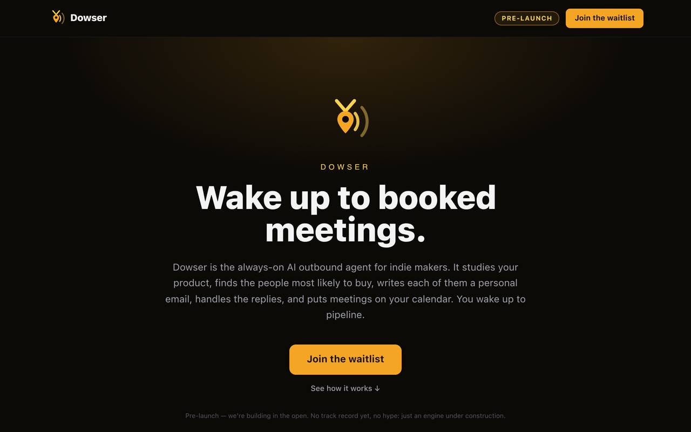

EXP-04
Dowser
An AI outbound engine that finds prospects and turns cold outreach into booked meetings. I built it to get beta testers for Bookvera.
IN DEVELOPMENT

BUILT
A reusable prospecting engine: it finds prospects, scores them, and runs outreach. The decision layer is a batched model call that returns a verdict, a fit score, and reply intent for each prospect.
WHAT BROKE
I did not trust the model with the send button. The decision layer runs in shadow mode: its scores are calibration-only, and a deterministic 0-to-10 scoring gate stays authoritative. Any model failure falls through to the existing path unchanged, so a bad model day cannot break outreach.
HOW I JUDGE IT
The test suite is the judge: 158 of 158 tests green, typecheck clean. Routing is by confidence: high confidence acts, mid confidence falls through to the existing path, low confidence goes to a human.
RESULTS
Engine built and green; built to recruit Bookvera beta testers first, reusable for any business after that.
First campaign has not run yet. Volume, reply rate, and meetings booked get reported here when they exist.